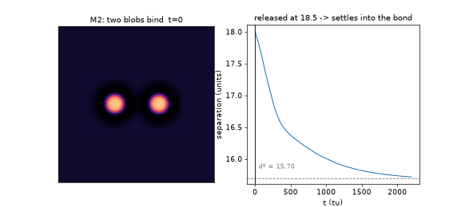
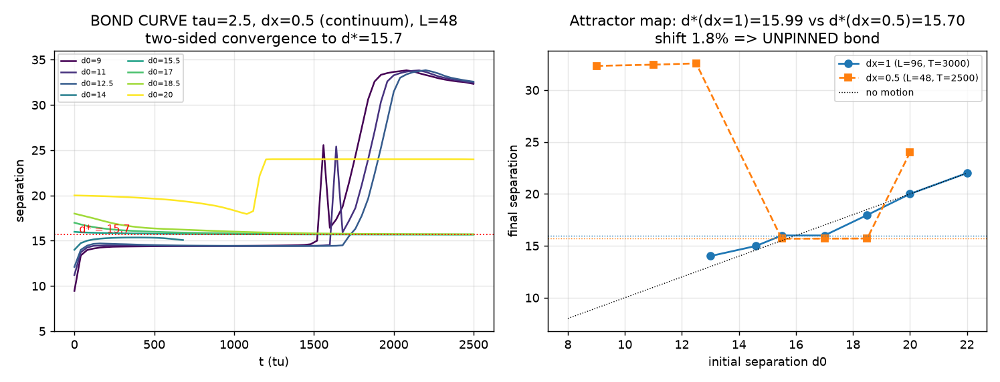
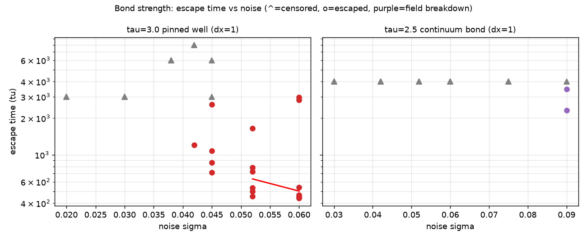
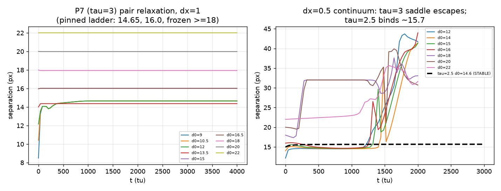
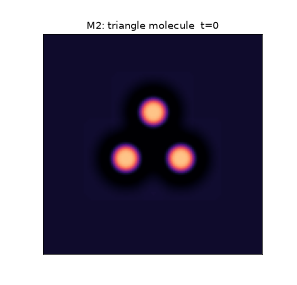
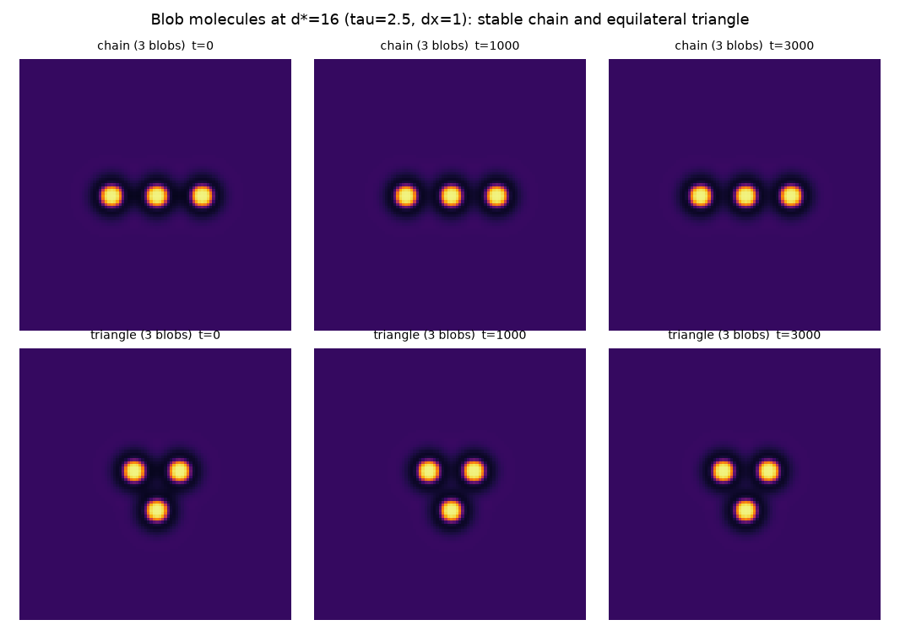
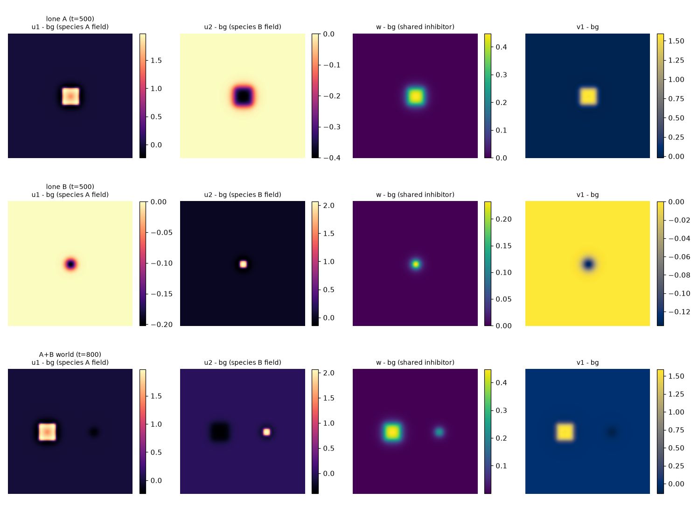
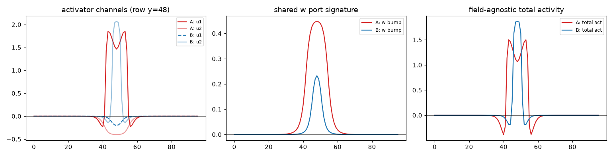
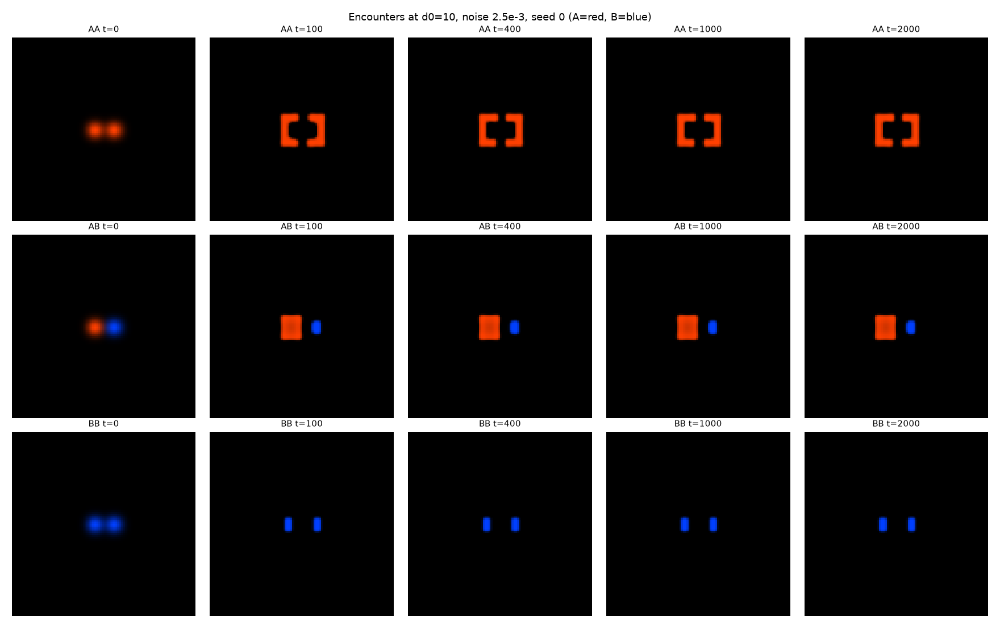
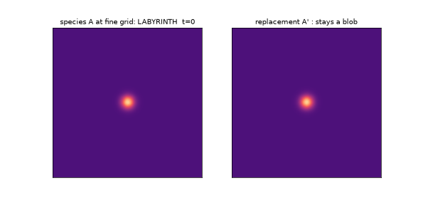

Post 3 — how blobs bind at quantized distances, why big blobs labyrinth, and the two-species architecture.
Binding — blob molecules
Prerequisite: post 2 for the IMEX-FFT/pinning conventions used throughout.
Known: tail-quantized soliton molecules (Bode et al.; bond forces measured by Bödeker et al.). Ours: the unpinning discipline and the saddle alarm.
Blobs interact through their field tails. The w halo gives plain repulsion — that alone
would make a gas of loners. But with a wider slow inhibitor (Dv=2, τ=2.5), the
v-tail develops a gentle oscillation: rings of alternating push and pull around each
blob. A neighbor sliding down that corrugated landscape gets trapped at the first well —
a bond at a preferred separation:
bond length (measured): d* = 15.70 ± 0.02 — approached from both sides; basin ≈ [14.5, 19.5]; no second well ≤ 20

M2 — two blobs bind. Released at separation 18.5, the pair slides
into the well and settles onto d*=15.70 (dashed line). Released inside ~14.5 they push
apart to the same distance. Bond strength: under noise strong enough to nearly kill a
lone blob (σ=0.075), 15/15 bonded pairs refused to escape for the full 4000 tu watch.

The bond curve. Left: separation vs time — releases from 15.5/17/18.5 converge two-sided onto d*=15.70 (dashed); releases at 9–12.5 sit on the inner 14.4 remnant (the τ=3 saddle's descendant) before escaping late; d0=20 walks off. Right: the attractor map at two grid resolutions — d* shifts only 1.8% under dx→dx/2, the unpinning certificate.

Bond strength. Escape time vs noise amplitude: bonded pairs outlive the observation window (censored, arrows) at noise levels approaching single-blob lethality (σ=0.09).

The saddle unmasked. The τ=3 'bond' at coarse grid (left) vs the continuum (right): the lattice-pinned state is revealed as a saddle that slides apart with a 140-tu e-folding time — the alternation theorem (Buryak–Akhmediev) says every other tail-bound distance is a saddle, so a 'stable' state at a predicted saddle distance is a pinning alarm.

Molecules: three blobs form a stable equilateral triangle (sides
16.0/16.1/16.1); chains of three at [16, 16] also hold. These are the first composite
objects.

The molecule family at the certified point: dimer, 3-chain, triangle, 4-square — all at the same quantized bond length.
Honest negative, upgraded by the literature: the bond we first
found at the M0-ish point (τ=3) is a lattice-pinned state that the continuum limit
reveals to be a saddle. Theory says this is expected, not accidental:
tail-mediated bound states alternate stable/saddle in their distance ladder
(Buryak & Akhmediev PRE51:3572) — the lattice stabilized a predicted
saddle. Free artifact detector, now adopted: a "stable" bond found at a
theory-predicted saddle distance is a pinning alarm. Grid-refinement checking is not
optional in this program.
Flavors — two species in one world
To get more than one kind of blob, the architecture is: each species gets a
private activator ui and private slow inhibitor vi, and all
species share one long-range w (driven by the average activity). Private u,v = a
species' own chemistry; shared w = a common "space" they all exclude each other from.
A one-parameter iso-background line (k₁ and k₄ co-varied so the vacuum state stays
identical) lets us dial species apart without destabilizing the world:
species
k₁
k₄
size
w-footprint
character
A
−1.00
1.40
169 px
wide (peak 0.45)
large, broad, strong presence
B
−1.65
2.15
25 px
narrow (peak 0.23)
small, sharp — the natural "cargo"

Species are port-distinguishable: a probe patch reading only the shared w field
classifies A vs B correctly 20/20 — an agent at an anonymous port can tell flavors apart
without god vision. Encounters conserve flavor (A+B, A+A, B+B all repel at working
distances; the only exception is a documented deterministic A+A merge at near-contact).
No conversion, no annihilation.
Continuum caveat (found later, kept honest): the big species A is
itself lattice-stabilized — at fine grid resolution it slowly grows into a labyrinth
pattern. Its port-classification results stand, but machine work uses the compact
replacement A′ (k₁=−1.564, k₄=2.05, 36 px; metastable ≥ 8600 tu, documented) plus the
continuum-clean B. Re-engineering a truly continuum large species is parked.

Port-distinguishability. Probe-patch signatures for species A vs B: the shared w-field footprint alone classifies 20/20 — an agent at an anonymous port can tell flavors apart.

Encounter outcomes ('scattering outcomes' in Nishiura's vocabulary): A+A, A+B, B+B at two approach distances — flavor is conserved in all 18 runs (repulsion everywhere; the single A+A near-contact merge is the one documented exception).
The labyrinth instability — why big blobs are hard (known: transverse/labyrinthine instability, Hagberg & Meron PRL72:2494; self-replicating spots, Pearson Science261:189)
What a labyrinth is. The blob state ("on" disk in an "off" sea) is not the only
localized solution these equations admit — there is also the stripe: a band of
activator flanked by inhibitor on both sides. Whether a chunk of "on" phase prefers to be
a disk or a stripe is a competition between two pressures on its interface: the effective
surface tension (wants to shrink boundary length → disks) and the activator's
lateral drive (wants to extend the interface into fresh territory → fingers).
For a small blob the boundary is strongly curved, tension dominates, and the disk is
stable. Make the blob larger and its edge gets flatter — and a flat interface in this
parameter regime is transversely unstable: any gentle bulge concentrates activator,
outruns the local inhibitor, and grows into a finger. Each finger is itself a stripe whose
tip keeps extending and whose sides repel other fingers through the w-halo, so the pattern
elongates, branches, folds, and packs the domain at a fixed stripe wavelength — a
space-filling maze. That is the labyrinth (the same fingering morphology as ferrofluids
between glass plates, block-copolymer films, and Turing-stripe chemistry). It is a real
solution of the continuum equations — just not the solution we wanted to call a "species".
Why size is the trigger. The interface instability has a threshold wavelength: bulges
shorter than it are ironed out by tension, longer ones grow. A 25–36 px blob (B, A′) is
smaller than that wavelength — its whole edge is one tight curve, nothing fits. The 169 px
species A has long, nearly flat edge segments — several unstable wavelengths fit along its
rim, so it fingers. Same equations, same parameters: being big is itself the vulnerability.
Why we only saw it at fine grid. At dx=1 the fingering seed is a sub-pixel bulge —
the washboard from the numerics box flattens it out before it can grow: the lattice was
stabilizing A, the same artifact that faked the τ=3 bond, now propping up a whole
species. At dx=0.5 the continuum takes over and the truth comes out (36 → 3200 px² over
~3000 tu). The honest inventory after refinement: B is continuum-clean (10,000 tu),
A′ — pulled back along the iso-line to sit safely below the fingering threshold —
is compact-metastable (one slow reorganization event seen at ~8600 tu; used within
documented lifetime), and a truly large continuum species would need a different
stabilization mechanism (stronger/longer-range w to raise the threshold wavelength,
or a ring/annulus topology) — parked until a machine actually needs a giant.

The instability, live (both panels at fine grid, identical
conditions except species parameters): species A (left) fingers from its rim, branches,
and fills the box as a maze; the iso-line replacement A′ (right) holds its disk. The
lattice had been hiding the left panel for the entire M3 campaign.